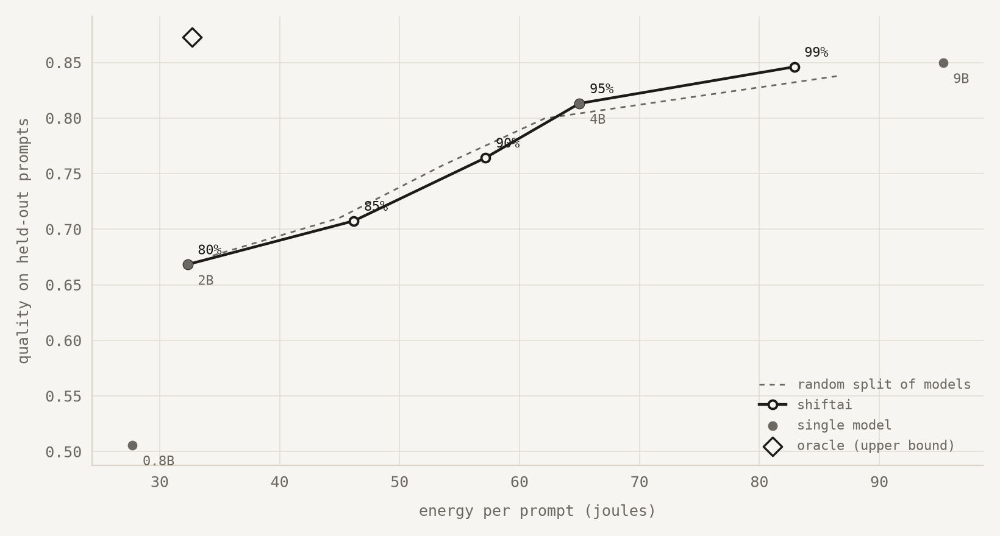
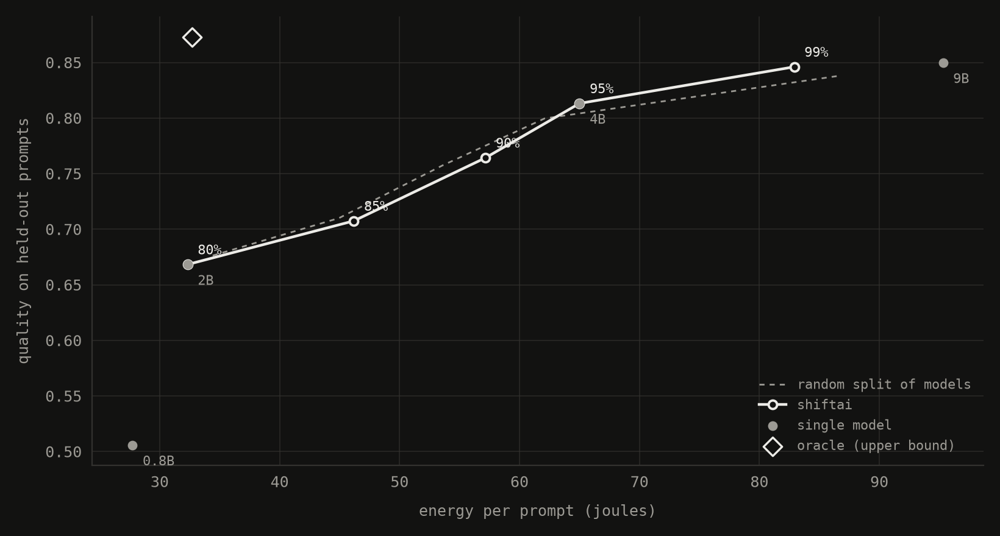

Right-size every prompt.
Most prompts don't need the biggest model. ShiftAI sends each one to the smallest local model that can answer it well, so you get answers faster and spend less energy, at a quality level you choose.
- 01Reads the promptTurns it into an embedding and finds the most similar prompts it learned from.
- 02Predicts each modelEstimates how often each local model, from 0.8B to 9B parameters, gets prompts like this right.
- 03Picks the smallest that's good enoughTakes the fastest model that keeps your quality target, and the 9B when unsure.
Runs entirely in your browser: your prompt is never sent anywhere. The first route downloads the router's embedding model (274 MB, once).
Real prompts from the test set the router never saw while training, with the answers all four models actually gave and how each was graded. Pick a prompt and move the quality target to see which answer ShiftAI would have given you, and what it saved.
Each point is one way of answering all 760 test prompts. Higher means better answers; further left means less energy. Always using the 9B sits top right. ShiftAI's line (labelled by quality target) keeps most of that quality for much less energy.


| quality target | quality kept | faster | less energy |
|---|---|---|---|
| 85% | 83.3% | 51.7% | 51.5% |
| 90% | 89.9% | 43.7% | 40.0% |
| 95% | 95.7% | 38.7% | 31.8% |
| 99% | 99.6% | 13.8% | 13.0% |
Savings are against always using the 9B model, router overhead included. On open-ended requests at the 90% target ShiftAI kept 94% of the 9B's quality with 46% less latency. Between 80% and 95% a well-tuned random split of models is about as efficient; the clear win is at 99%. Method, baselines and limitations.